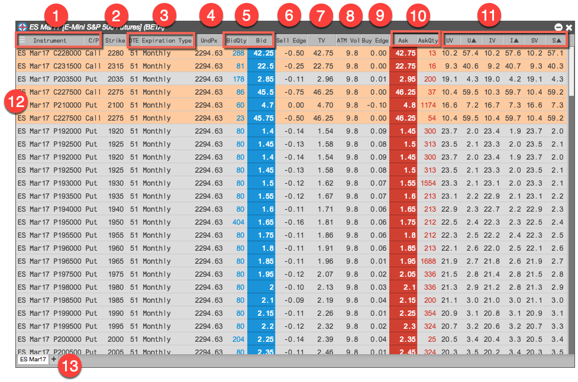

TT’s Electronic Eye display consists of the following:

- Instrument columns — Name and type of the options instrument
- Strike price column — Strike price for the instrument
- Expiration columns — Expiry information for the instrument
- Underlying price column — Price of the underlying instrument associated with the options instrument
- Bid-related columns — Market data relating to bids, including the bid quantity and bid price
- Sell Edge column — Sell edge at the bid price
- Theoretical values column — Theoretical value of the instrument
- ATM Vol column — At-the-money volatility
- Ask-related columns — Market data relating to asks, including the ask quantity and ask price
- Buy Edge column — Buy edge at the ask price
- Volatility and delta columns — Volatilities and deltas for the user-defined, implied, and settlement volatility curves.
- Highlighted matches — Options instruments that no longer meet the filter requirements and will be removed in a few seconds, as indicated by the orange background.
- Tabs — Tabs allowing you to monitor multiple instruments in a single Electronic Eye